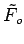
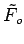

Inhalt Index DeskTop Bronstein

 Dynamische Systeme und Chaos Bifurkationstheorie, Wege zum Chaos Bifurkationen in Morse-Smale-Systemen Lokale Bifurkationen nahe einem periodischen Orbit
Dynamische Systeme und Chaos Bifurkationstheorie, Wege zum Chaos Bifurkationen in Morse-Smale-Systemen Lokale Bifurkationen nahe einem periodischen Orbit


Gegeben sei (17.17) mit und  . Für alle
. Für alle  nahe 0 habe (17.17) einen periodischen Orbit . Die Multiplikatoren von
nahe 0 habe (17.17) einen periodischen Orbit . Die Multiplikatoren von  seien mit mit und
seien mit mit und  .
.
Nach dem Satz über die Zentrumsmannigfaltigkeit ergibt sich in der vorliegenden Situation eine zweidimensionale reduzierte C6-Abbildung
mit für  nahe
nahe  .
.
Hat die JACOBI-Matrix für alle  nahe 0 die konjugiert komplexen Eigenwerte und mit , ist und ist für q = 1,2,3,4 keine q-te Wurzel aus
nahe 0 die konjugiert komplexen Eigenwerte und mit , ist und ist für q = 1,2,3,4 keine q-te Wurzel aus  , so läßt sich (17.25) durch eine glatte
, so läßt sich (17.25) durch eine glatte  -abhängige Koordinatentransformation auf die Form bringen ( LANDAU-Symbol), wobei  in Polarkoordinaten durch
-abhängige Koordinatentransformation auf die Form bringen ( LANDAU-Symbol), wobei  in Polarkoordinaten durch
gegeben ist. Dabei sind und b differenzierbare Funktionen. Sei . Dann ist die Ruhelage r = 0 von (17.36) für alle  asymptotisch stabil und für
asymptotisch stabil und für  instabil. Außerdem existiert bei
instabil. Außerdem existiert bei  der Kreis , der invariant unter der Abbildung (17.36) und asymptotisch stabil ist (s. linke Abbildung).
der Kreis , der invariant unter der Abbildung (17.36) und asymptotisch stabil ist (s. linke Abbildung).
Satz von Neimark und Sacker: Der Satz von NEIMARK und SACKER (s. Lit. 17.18, 17.3) sagt aus, daß das Bifurkationsverhalten von (17.36) auch auf zutrifft (superkritische HOPF-Bifurkation für Abbildungen).
| Beispiel |
|
In der Abbildung (17.35), gegeben durch |
Bezogen auf die Differentialgleichung (17.17) bedeutet die Existenz einer geschlossenen invarianten Kurve der Abbildung (17.35), daß bei a(0) < 0 der periodische Orbit  instabil wird und sich bei
instabil wird und sich bei  ein bezüglich (17.17) invarianter stabiler Torus abspaltet (s. Abbildung).
ein bezüglich (17.17) invarianter stabiler Torus abspaltet (s. Abbildung).